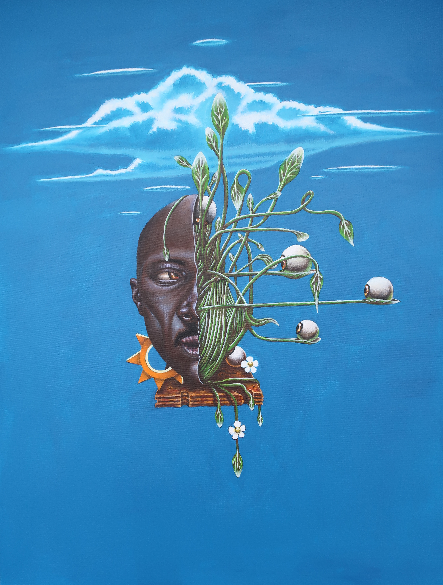

© 2025 Ola-Itan

Ola-Itan est un peintre et illustrateur né à Marie-Galante, spécialisé dans la peinture acrylique, la peinture à l’huile et le dessin à l’encre. C’est au Centre des Arts et de la Culture de Pointe-à-Pitre qu’il acquiert les fondamentaux du dessin et de la peinture.
Puisant dans son univers intérieur influencé par les littératures de l’imaginaire, les oeuvres graphiques et vidéoludiques occidentales et asiatiques, mais aussi par la mythologie et l’art Vaudoun, Yoruba et Caribbéen, ses compositions caractérisées par un souci constant du détail sont principalement centrées autour du fantastique et tendent vers un surréalisme tantôt coloré et lumineux, tantôt sombre et horrifique.
Au fil de ses œuvres, c’est un univers fantasmagorique qui se dessine, chaque tableau et dessin défrichant un nouveau territoire, brossant un nouveau portrait et par là même interrogeant les rapports entre l’homme, la nature et le surnaturel.
Il vit actuellement dans le sud de la France.